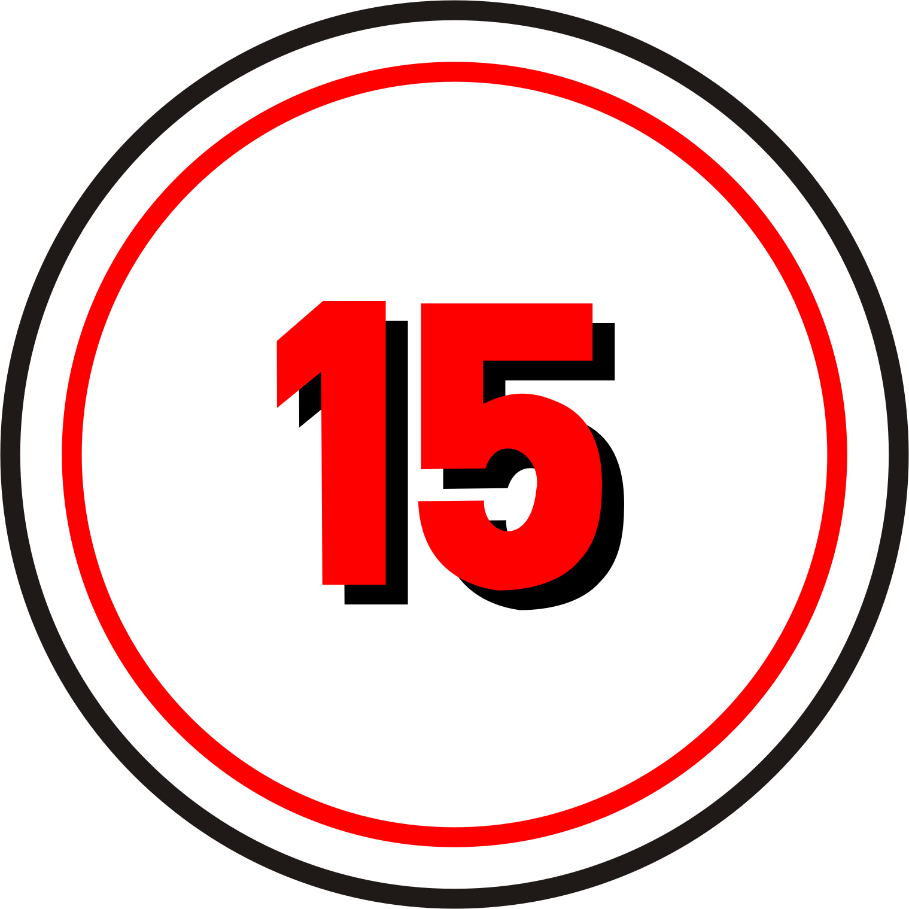

Primer Año
Las asignaturas del 1º año de FP Básica.
Ciencias Aplicadas I

Requisitos
Es necesario cumplir estos requisitos.
-

1º Requisito
Tener cumplidos quince años, o cumplirlos durante el año natural en curso, y no superar los diecisiete años de edad en el momento del acceso o durante el año natural en curso.
-

2º Requisito
Haber cursado el primer ciclo de Educación Secundaria Obligatoria (3º de la ESO) o, excepcionalmente, haber cursado el segundo curso de la Educación Secundaria Obligatoria.
-

3º Requisito
Haber propuesto el equipo docente a los padres, madres o tutores legales la incorporación del alumno o alumna a un ciclo de Formación Profesional Básica.